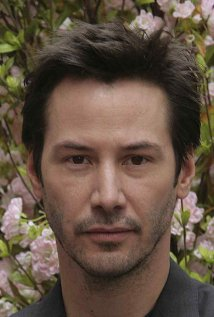
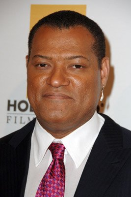
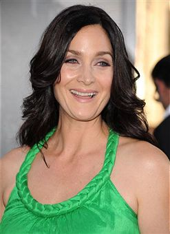
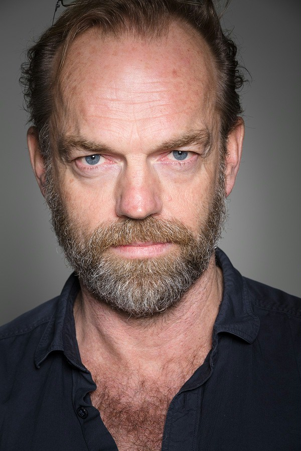

Keanu Reeves
Laurence Fishburne
Carrie-Anne Moss
Hugo Weaving
The Matrix is a 1999 American-Australian science fiction action film written and directed by The Wachowskis, starring Keanu Reeves, Laurence Fishburne, Carrie-Anne Moss, Hugo Weaving, and Joe Pantoliano. It depicts a dystopian future in which reality as perceived by most humans is actually a simulated reality called "the Matrix", created by sentient machines to subdue the human population, while their bodies' heat and electrical activity are used as an energy source. Computer programmer "Neo" learns this truth and is drawn into a rebellion against the machines, which involves other people who have been freed from the "dream world". The Matrix is known for popularizing a visual effect known as "bullet time", in which the heightened perception of certain characters is represented by allowing the action within a shot to progress in slow-motion while the camera's viewpoint appears to move through the scene at normal speed. The film is an example of the cyberpunk science fiction genre.[6] It contains numerous references to philosophical and religious ideas, and prominently pays homage to works such as Plato's Allegory of the Cave,[7] Jean Baudrillard's Simulacra and Simulation[8] and Lewis Carroll's Alice's Adventures in Wonderland.[9] The Wachowskis' approach to action scenes drew upon their admiration for Japanese animation[10] and martial arts films, and the film's use of fight choreographers and wire fu techniques from Hong Kong action cinema was influential upon subsequent Hollywood action film productions. The Matrix was first released in the United States on March 31, 1999, and grossed over $460 million worldwide. It was generally well-received by critics,[11][12] and won four Academy Awards as well as other accolades including BAFTA Awards and Saturn Awards. Reviewers praised The Matrix for its innovative visual effects, cinematography and its entertainment. The film's premise was both criticized for being derivative of earlier science fiction works, and praised for being intriguing. The action also polarized critics, some describing it as impressive, but others dismissing it as a trite distraction from an interesting premise. Despite this, the film has since appeared in lists of the greatest science fiction films,[13][14][15] and in 2012, was added to the National Film Registry for preservation.[16] The success of the film led to the release of two feature film sequels, both written and directed by the Wachowskis, The Matrix Reloaded and The Matrix Revolutions. The Matrix franchise was further expanded through the production of comic books, video games, and animated short films in which the Wachowskis were heavily involved
The Matrix is a movie that changed the way of making movies. The visual effects brought a new era of CGI production that switched roles in Hollywood. After this movie, many others started to follow some aspects of it like slow bullets toward to the enemies and good guys. Regardless all the unrealistic things that happens in the movie, it has a amazing story and philosophy behind it that you should pay attention all the time to get details and understand pretty well what is happening there. Also the movie oscar winner.
Also The Matrix Reloaded and The Matrix Revolutions earned some awards like:
Here you can find more details of production of the film.
Neo believes he's living a normal, but slightly troubled life in 1999. By day, a computer programmer for a large, generic software company; by night, a hacker, providing the fruits of his labors to other troubled souls. He lives alone, he doesn't sleep, and there's a profound emptiness in his life, but it's something he can't put his finger on - until he is contacted by Trinity. "It's the question that drives us", she whispers in his ear, to which he correctly responds "What is the Matrix?" It is this question that has gnawed at Neo seemingly his entire life, yet he's never put it into words before now. It is the voicing of this question that begins his transformation into The One. Morpheus has sent Trinity to contact Neo, believing he is The One of prophecy. Morpheus explains it to Neo in this way: "When the Matrix was first built there was a man born inside that had the ability to change what he wanted, to remake the Matrix as he saw fit. It was this man who freed the first of us and taught us the truth - When he died, the Oracle prophesied his return and envisioned that his coming would hail the destruction of the Matrix."
For a lot of people one of the most confusing scenes in Reloaded is Neo's discussion with The Architect. Coincidentally, this is probably the most critical scene in the movie. Everything that's come before is put into question by what the Architect says, and everything yet to come in Revolutions will be influenced by his message. Keep in mind that The Architect may be deliberately misleading Neo. We don't buy that. We're assuming he has no reason to mislead Neo, and are taking what he says as truth. The Architect is the 'father' of the Matrix. He's an entity from the machine world and he designed the original 'failed' Matrix and the current 'successful' one. The first Matrix failed because it was too perfect. It was a virtual paradise, a utopia for humanity. Unfortunately, humans are not accustomed to living in a perfect world, and the test subjects rejected the simulation because it just wasn't right. The second Matrix he designed more closely resembled the 'real world' of 1999: it was hard, it was dirty, it had death, violence, war, atrocities, and everything else a flawed species would likely create for itself. This one also failed, but for reasons that the Architect couldn't figure out. Another machine program (one created to investigate aspects of the human psyche) stumbled upon the reason for the second failure: a lack of choice. If humans were offered a choice, even one felt at an unconscious level, then over 99% would accept the Matrix and live in the virtual world, unknowingly powering the machines. The remaining percentage would choose the other option, becoming a 'free mind' destined to become part of the human resistance based in Zion.
"This is your last chance. After this, there is no turning back. You take the blue pill - the story ends, you wake up in your bed and believe whatever you want to believe. You take the red pill - you stay in Wonderland and I show you how deep the rabbit-hole goes."